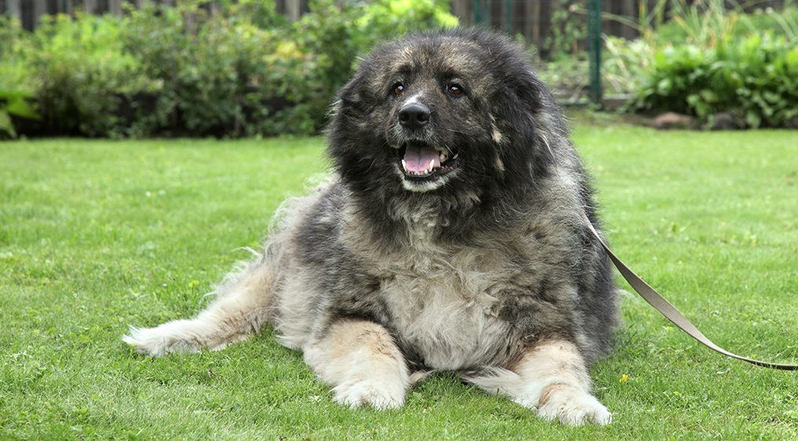

| דף ראשי | גזעים | מחלות | רקעים ותמונות | סקר | צרו קשר |
|---|
| קוקר ספאנייל |
| סמוייד |
| שפיץ יפני |
| פומרניאן |
| פודל |
| דני ענק |
| דלמטי |
| רועה גרמני |
| רועה קווקזי |
| רועה בלגי |
| בולדוג אמריקאי |
| בולדוג צרפתי |
| בולדוג אנגלי |
| צ'או צ'או |
| שיצ'ו |
| אמסטף |
| פינצ'ר |
| רוטווילר |
| דוברמן |
| האסקי סיבירי |
רועה קווקזי
מידע נוסף
רועה קווקזי הינו גזע של כלבי רועים גדולים הפופולריים מאוד בצפון קווקז, אזרבייג'אן, גיאורגיה וארמניה. לכלבים אלו מבנה גוף שרירי ועצמות גדולות ולרובם יש פרווה כפולה ועבה במיוחד. רועה קווקזי מוכר גם ככלב הרים קווקזי או אובקרקה קווקזי.
רועה קווקזי - מקור הגזע והיסטוריה
כמו רוב הכלבים מהגזע המולוסרי, רועה קווקזי נמצא בעולם מימי קדם ונחשב עתיק. למרות זאת, זכה הגזע להכרה מאיגוד הכלבים בגרמניה בשנת 1930. ישנם סוגים שונים של כלבי רועים קווקזים, כל סוג מתאפיין בשוני מסוים במראה החיצוני ורוב ההבדלים ניכרים בעובדה שהכלבים גדלו באזורים שונים.
רועה קווקזי - נתונים ומאפיינים
לאובקרקה הקווקזי עיניים שקועות וכהות. רגליו של הכלב עבות ושריריות, וכל גופו מלא בפרווה מאוד עבה בעלת שכבה כפולה ולחה על מנת לחזק את הבידוד ממזג האוויר הקר. אף מסיבי ונחיריים גדולות, פרווה גם בין האצבעות ועל האוזניים שומרים על הכלב. גזע זה הינו אסרטיבי, חזק, אמיץ ומגונן, שכן תפקידו הראשון היה להגן על העדר והחווה. משקלם וגובהם של רועים קווקזים משתנים מכלב לכלב ונעים בין 45 ל70 ק"ג ובין 65 ל75 ס"מ.
מחלות נפוצות וטיפול - כלב רועה קווקזי
מבחינה בריאותית, רועה קווקזי הינו כלב בריא יחסית ולא ידוע על מחלות מסוימות, תורשתיות או בעיות בריאותיות אליהן הוא רגיש. עם זאת, רועה קווקזי הוא כלב גדול וכבד, וכלבים מסוג זה בדרך כלל נתונים לבעיות מפרקים שונות- הבולטת שביניהן הינה מחלת ההיפ-דיספלסיה (מחלה הגורמת לירכיים לזוז ממקומן הטבעי). תוחלת החיים הממוצעת של רועה קווקזי הינה 12 שנים.
